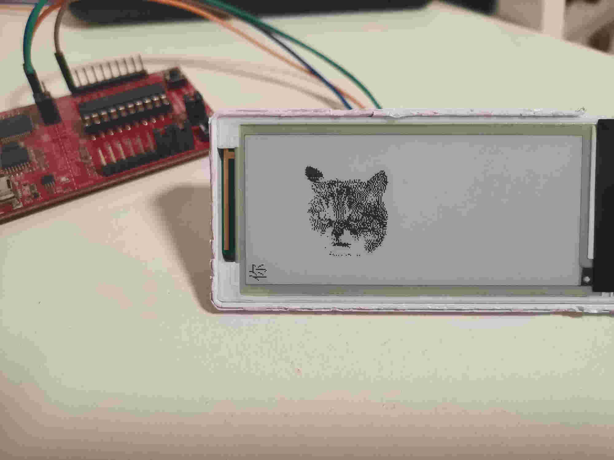

电子墨水屏¶
2in9记录¶
从汉朔2.9寸电子价签中拆出的墨水屏可以使用微雪电子的V1版本程序进行驱动，有几点需要记录一下
墨水屏较长的一侧为驱动芯片的高侧，较短的一侧为驱动芯片的宽侧，示意图如下
0 128
---------------- 01234567 ... 128
0 | | ******** ... *
| | 在宽侧每8个像素点为一组，字节倒序，即pixel 0为MSB，
| | pixel 7为LSB，取模时需要注意
| |
| |
| |
| |
| |
| |
| |
| |
| |
| |
| |
| |
296 | |
----------------
电子价签内部有一个MOS-FET用于控制墨水屏的供电，连接在P2.6。
最终的显示效果如下

使用电子价签自带的MSP430单片机驱动的示例程序可以参考这里。
电子墨水屏中lut的时序解读，以phase0A为例:
- 当像素点从白转黑时(HL), V_{pixel} 电压为 VSH
- 当象素点从黑转白时(LH), V_{pixel} 电压为 VSL
- 其他情况下，V_{pixel} 电压为 VSS